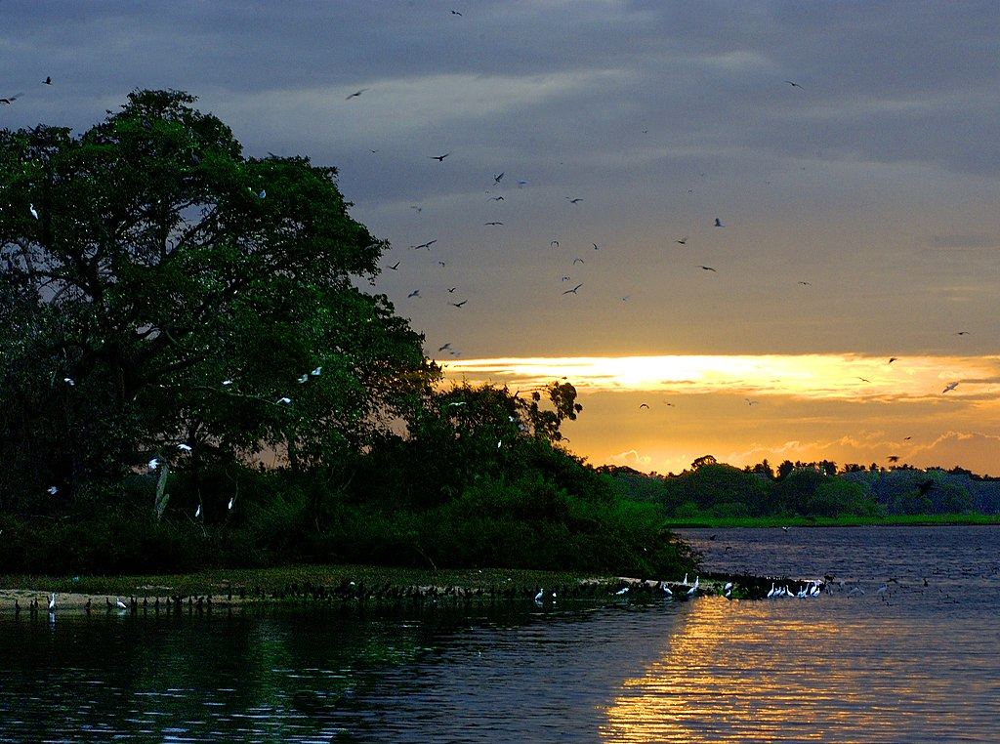
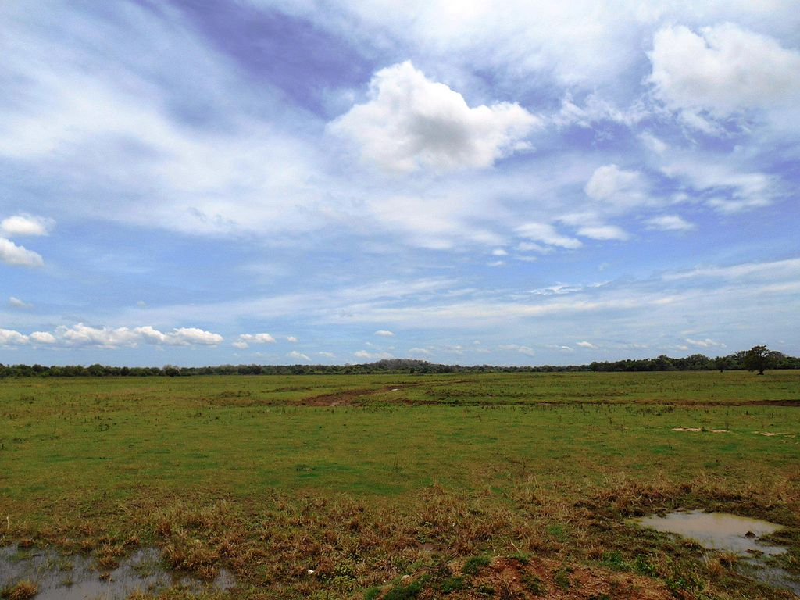
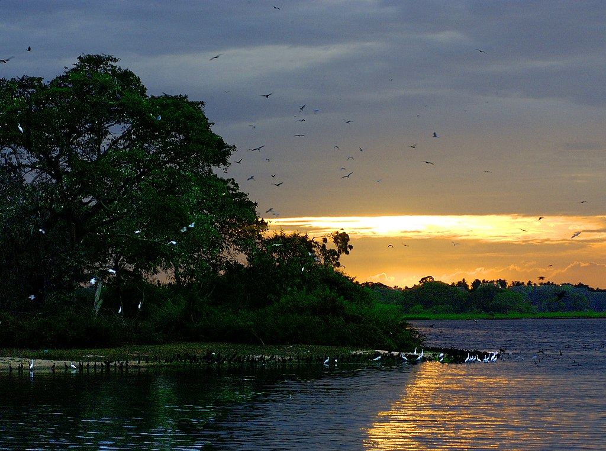
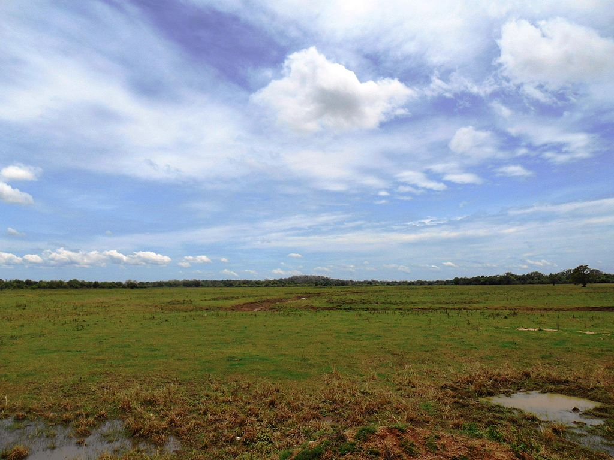

Established in 1949, the Department of Wildlife Conservation in Sri Lanka emerged in response to early conservation efforts dating back to 1889. Initially addressing the rampant destruction of wildlife resources, the department has evolved over the years. Beginning with ordinances to curb the exploitation of elephants, buffaloes, and game, and later expanding to include protected areas like Yala and Wilpattu, the department's mandate grew with the Fauna and Flora Protection Ordinance of 1937.
The Wildlife Department's inception in 1949 marked a pivotal moment, responding to the need for a specialized entity to enforce wildlife protection laws and manage the expanding network of wildlife reserves. Over subsequent decades, the department tackled challenges arising from large-scale development projects, establishing protected areas in the Mahaweli region and initiating projects like the Mahaweli Environmental Project with USAID support.
In 1993, the department undertook a comprehensive initiative, "Development of Wildlife Conservation and Protected Area Management," focusing on long-term management plans, human resource development, and strategies for wild elephant conservation. This project, funded by UNDP/FAO through Global Environmental Facility (GEF), significantly contributed to the department's evolution and concluded in 1999. Today, the Department of Wildlife Conservation plays a vital role in safeguarding Sri Lanka's diverse fauna and flora against various threats, reflecting its commitment to conservation and sustainable management.
 


